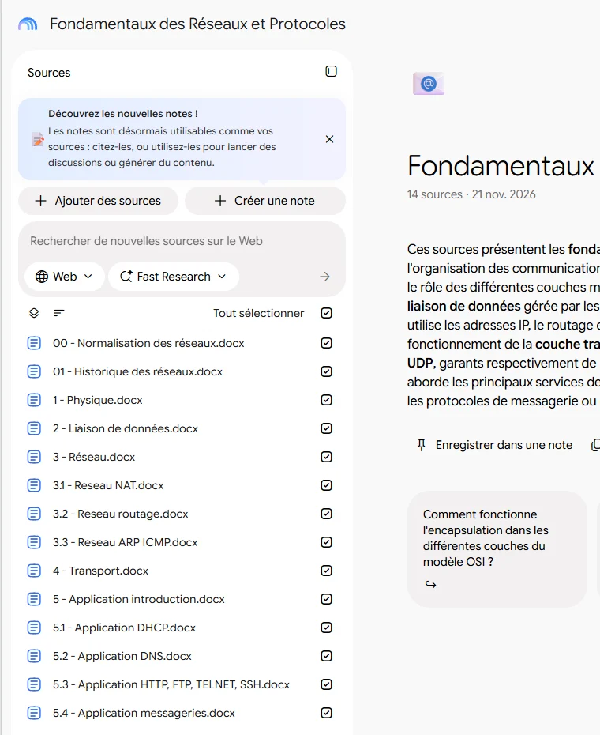
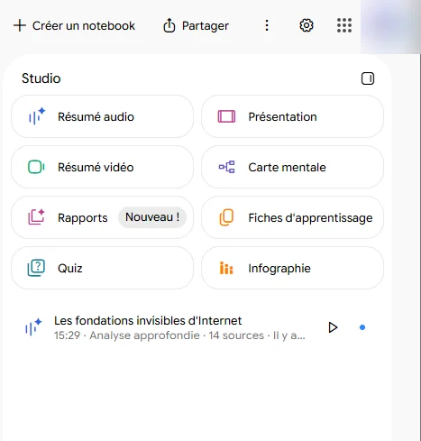
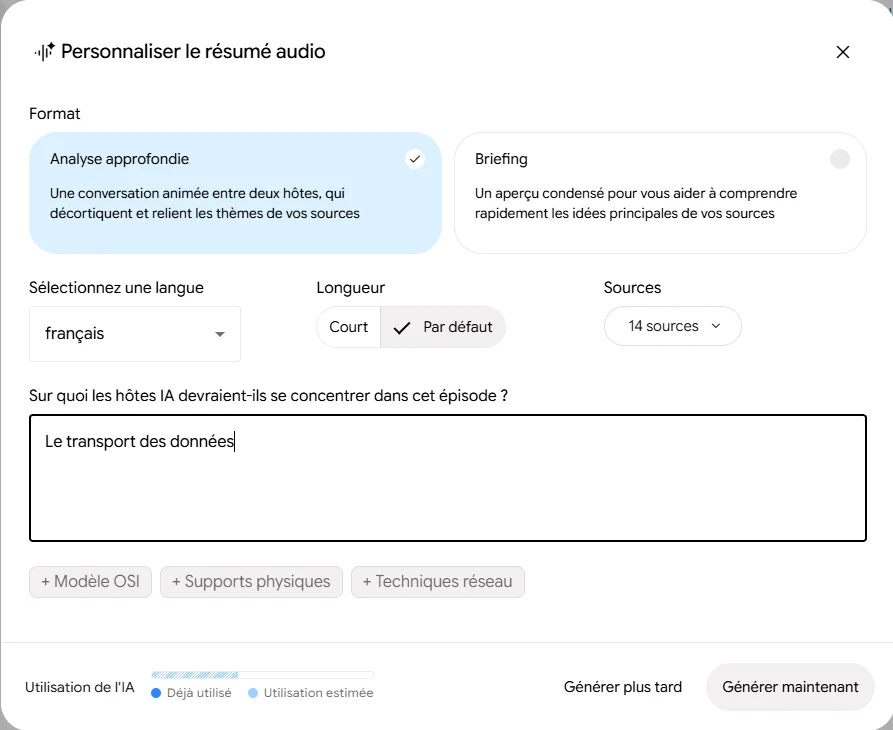

1
Créer un notebook et ajouter tes sources
Créer un notebook › Ajouter des sources
Crée un notebook, puis Ajouter des sources : PDF, Word, Google Docs, page web, vidéo YouTube, texte copié…

Tes PDF, cours et rapports deviennent un podcast : deux voix d'IA en discutent, en français, gratuitement, dans Gemini Notebook (l'ex-NotebookLM).

Le Résumé audio (« Audio Overview » en anglais) est la fonction phare de Gemini Notebook, l'outil de Google qui s'appelait NotebookLM jusqu'au 16 juillet 2026. Tu lui donnes tes documents, et il en fait une conversation façon podcast entre deux hôtes IA, basée uniquement sur tes sources.
PDF, fichiers Word, Google Docs, pages web, vidéos YouTube… Les hôtes ne parlent que de ce que tu as ajouté au notebook.
Basé sur tes sourcesAnalyse approfondie : deux hôtes décortiquent et relient les thèmes. Briefing : un aperçu condensé des idées principales.
Analyse ou BriefingTu choisis la langue (français compris), la longueur (Court ou Par défaut) et tu dis aux hôtes sur quoi se concentrer.
PersonnalisableLecture de x0,5 à x2, téléchargement du fichier audio et partage par lien.
TéléchargeableSur le site de Gemini Notebook (ex-NotebookLM) ou dans son appli mobile, avec ton compte Google.
Crée un notebook, puis Ajouter des sources : PDF, Word, Google Docs, page web, vidéo YouTube, texte copié…

Dans le panneau Studio, à droite, choisis Résumé audio.

Choisis le format (Analyse approfondie ou Briefing), la langue, la longueur, écris sur quoi les hôtes doivent se concentrer, puis Générer maintenant.

Ajoute tes cours, demande aux hôtes de se concentrer sur le chapitre de l'examen, écoute dans les transports.
Un rapport trop long ? Format Briefing pour les idées principales en quelques minutes.
« Concentrez-vous sur les engagements et les frais. » Puis vérifie les passages dans le document.
Colle le lien d'une longue vidéo YouTube : tu écoutes la discussion au lieu de tout regarder.
Télécharge le fichier audio ou partage le lien pour que tout le monde ait le même résumé.
Google a mis le résumé audio dans plusieurs de ses outils ; chez les autres, il faut bricoler.
Bon pour : un vrai podcast à deux voix sur plusieurs sources à la fois, personnalisable, en français.
Bon pour : transformer un fichier envoyé dans le chat ou un rapport Deep Research en podcast.
Bon pour : lire ou résumer à voix haute, mais sans conversation à deux voix générée.

Chaque vidéo RepoPop Décode t'explique une fonction de ton IA en moins d'une minute, avec son kit comme celui-ci.